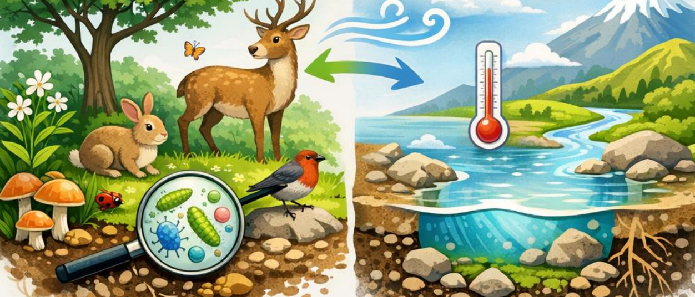

2. Fundamentos de la Ecología
La ecología estudia las interacciones entre los organismos y su entorno, analizando factores bióticos y abióticos que determinan el equilibrio ecológico.
Niveles de Organización
- Organismo
- Población
- Comunidad
- Ecosistema
- Biosfera
